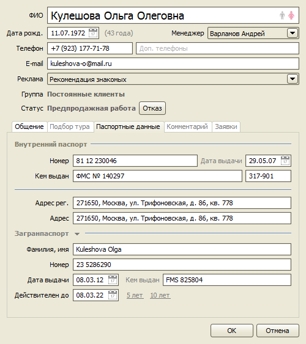
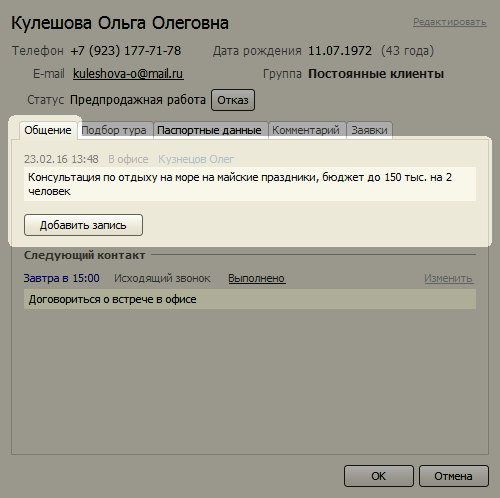
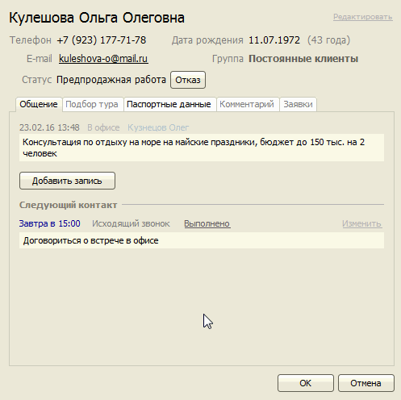
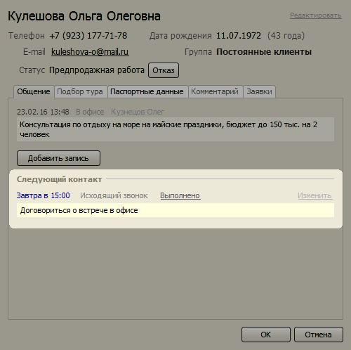
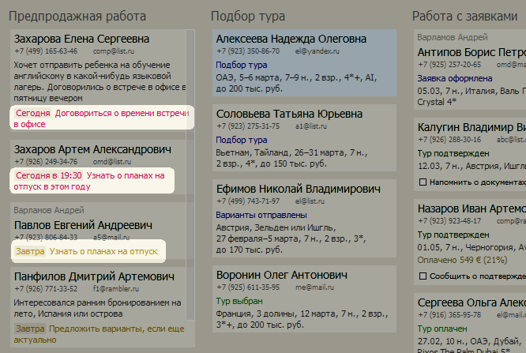
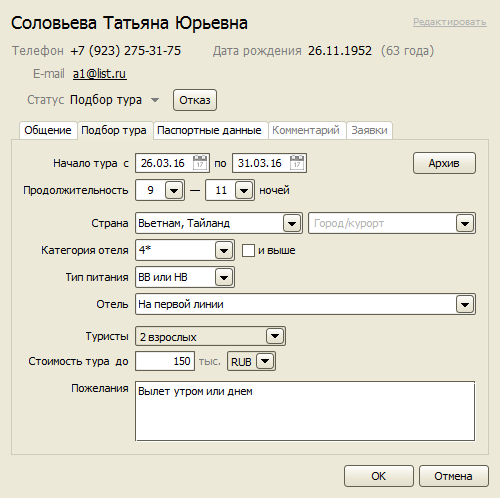
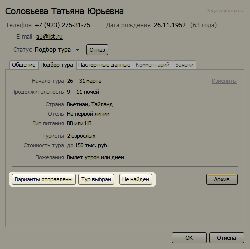
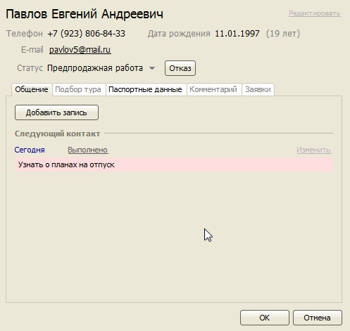
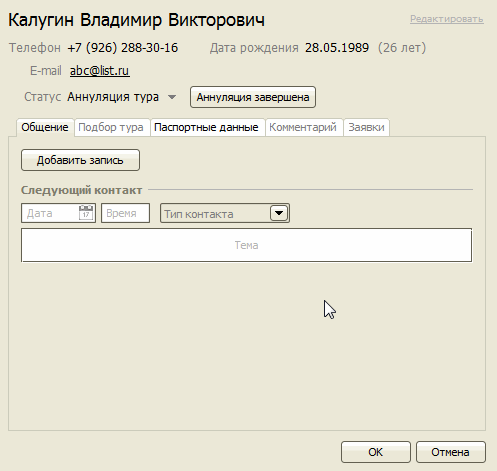
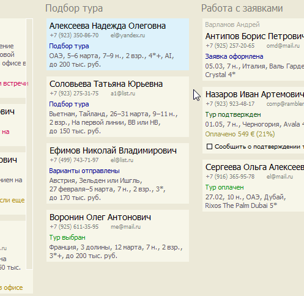

Карточка клиента
Карточка клиента содержит следующие данные:
- ФИО клиента,
- статус,
- контактная информация,
- паспортные данные,
- история общения с клиентом,
- следующий контакт,
- подбор тура,
заявки.

Этапы работы с клиентом и статусы
Работа с клиентом разбивается на 4 этапа, в каждом из которых клиенту присваивается определенный статус.
1 этап. Предпродажная работа
На данном этапе осуществляется подготовительная работа с клиентом перед заключением договора на бронирование, кроме
подбора тура, который выделен в отдельный этап.
Статус:
- Предпродажная работа – работа по привлечению клиента, предложение услуг клиенту, общение с клиентом перед подбором тура
2 этап. Подбор тура
На данном этапе клиент уже определился, куда он хочет поехать отдыхать, и менеджер подбирает варианты туров.
Статусы:
- Подбор тура – менеджер подбирает тур для клиента
- Варианты отправлены – менеджер отправил варианты клиенту и ожидает его решение
- Тур выбран – клиент выбрал один из предложенных вариантов, менеджер запланировал встречу с клиентом для заключения договора на бронирование
3 этап. Работа с заявками
На данном этапе заключается договор с клиентом, бронируется тур и производится остальная работа над заказом. Статусы
клиента могут меняться системой автоматически при изменении состояния заявки.
Статусы:
- Заявка оформлена – менеджер создал заявку на бронирование тура, клиент подписал Договор на обслуживание
- Тур забронирован – менеджер забронировал тур, ожидается подтверждение
- Тур подтвержден – туроператор подтвердил тур
- Отказ туроператора – туроператор не подтвердил тур
- Тур оплачен – тур подтвержден туроператором и полностью оплачен клиентом
- Документы готовы – документы на тур готовы, можно отдавать их клиенту
- Документы выданы – документы на тур переданы клиенту
- Тур аннулирован – клиент аннулировал тур
4 этап. Постпродажная работа
Данный этап начинается после передачи документов на тур клиенту. Мы можем напомнить клиенту о времени вылета, сообщить
информацию о рейсе, поинтересоваться впечатлениями об отдыхе, запланировать контакт для обсуждения планов на следующий отдых.
Статусы:
- Вылет завтра (ночью, утром, днем, вечером) – клиент вылетает завтра (статус устанавливается системой автоматически)
- Вылет сегодня (днем, вечером) – клиент вылетает сегодня (статус устанавливается системой автоматически)
- На отдыхе – клиент находится на отдыхе (статус устанавливается системой автоматически)
- Вернулся с отдыха – статус устанавливается для клиента автоматически на 7 дней после окончания тура, затем переводится в статус Клиент.
Другие статусы клиентов
Когда работа над туром завершена, клиенту автоматически присваивается неактивный статус “Клиент”. Если клиент отказался
от услуг, менеджер указывает причину отказа и устанавливает один следующих статусов:
- Потенциальный клиент – клиент еще ни разу не забронировал тур, возможны заказы в будущем
- Клиент – клиентом был ранее заказан хотя бы один тур
- Удален – клиента удаляется из справочника, но информация о работе с ним остается для статистики
- В черном списке – менеджер отметил клиента как нежелательного для дальнейшей работы
История общения с клиентом
После общения с клиентом по телефону, по почте или лично можно записать краткое содержание разговора и достигнутые
договоренности, так чтобы при следующем контакте быстро восстановить итоги прошлых переговоров.
История общения с клиентом расположена на первой закладке “Общение” карточки клиента.

Для добавления новой записи нажмите кнопку “Добавить запись”, выберите тип контакта из списка и заполните поле “Итог
общения”. Чтобы сохранить введенные данные и добавить еще одну запись, нажмите кнопку “Добавить”.

Планирование следующего контакта с клиентом
Менеджер может создать задачу для напоминания о следующем запланированном контакте с клиентом.

Когда наступит заданное время, программа покажет окно уведомления и выделит задачу красным цветом на экране CRM.

Если клиент имеет неактивный статус в момент наступления времени следующего контакта, то ему автоматически
присваивается системой статус "Предпродажная работа", так что он появляется на экране CRM.
Подбор тура
На закладке "Подбор тура" менеджер указывает параметры тура для поиска, а также пожелания клиента.

Текущий подбор тура может находится в одном из следующих состояний:
- Поиск тура – менеджер в процессе поиска тура клиенту
- Варианты найдены – подходящие варианты найдены
- Варианты не найдены – не найден ни один подходящий тур
- Варианты отправлены клиенту – подходящие варианты найдены и отправлены клиенту
- Тур выбран – клиент выбрал один из предложенных туров
- Подбор тура выполнен – подбор тура успешно закончен, создана заявка на бронирование
- Подбор тура отменен
Изменение состояния подбора тура производится с помощью кнопок, расположенных внизу.

Регистрация отказа клиента
Когда клиент отказывается от услуг нашей фирмы, менеджер должен зафиксировать этот факт в карточке клиента, чтобы изменить
статус на неактивный (клиенты с неактивным статусом не отображаются на экране CRM) и записать причину отказа для последующего
анализа в воронке продаж.

При отказе от забронированного тура менеджер сначала аннулирует заявку, клиенту автоматически присваивается статус “Аннуляция тура”.
Затем, после завершения процедуры аннуляции и возврата средств, менеджер в карточке клиента нажимает кнопку
“Аннуляция завершена”, выбирает причину отказа от тура, и клиент переводится в неактивное состояние.

Передача клиента другому менеджеру
В любой момент времени менеджер может передать своего клиента другому менеджеру, изменив значение поля “Менеджер” в
карточке клиента. При этом, если у клиента был активный статус, то информация о переданном клиенте появится на экране CRM
у того менеджера, которому передали клиента, и будет выделена голубым цветом.

Остались вопросы? Напишите нам на e-mail